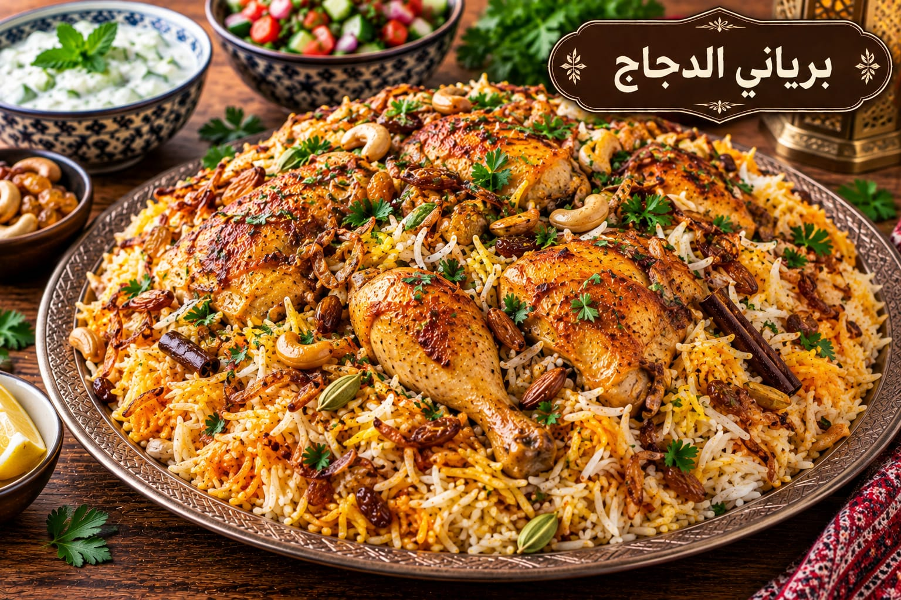

برياني الدجاج
أرز متبل بطعم غني

مقادير برياني الدجاج
- 1 كغ دجاج
- 3 أكواب أرز بسمتي
- 1 كوب لبن
- 2 بصلة
- 2 طماطم
- 1½ ملعقة صغيرة ملح
- 1 ملعقة صغيرة جارام ماسالا
- 1 ملعقة صغيرة كركم
- 1 ملعقة صغيرة كمون
- ½ ملعقة صغيرة فلفل أسود
طريقة عمل برياني الدجاج
- تبلي الدجاج باللبن ونصف البهارات 30 دقيقة.
- حمري البصل ثم أضيفي الدجاج والطماطم وبقية البهارات حتى ينضج الدجاج.
- اسلقي الأرز في ماء مملح 7 دقائق فقط ثم صفيه.
- ضعي الأرز فوق الدجاج وأضيفي ربع كوب ماء ساخن وغطي بإحكام.
- اطهي 20 دقيقة على نار هادئة ثم أريحيه 10 دقائق قبل التقليب.